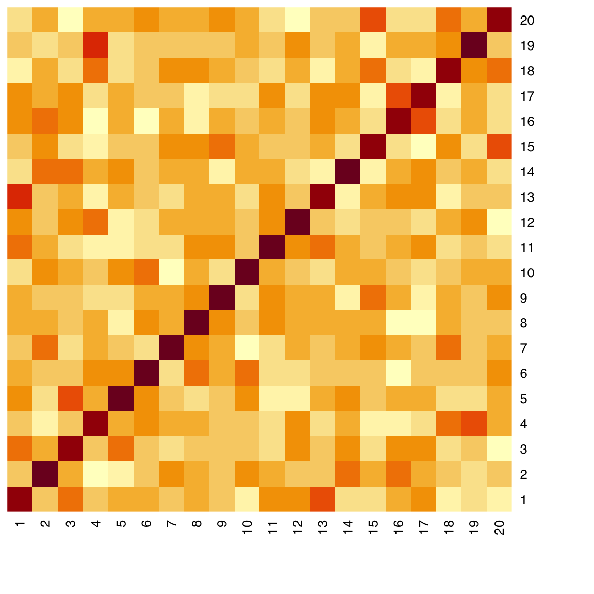

44 Base Graphics
This chapter is an introduction to what is known as base graphics, which is provided by the built-in graphics package. This includes a large number of functions to create plots, add graphical elements to existing plots, and control plotting parameters.
By no means are base graphics basic - they are powerful and flexible, and can be used to produce publication-quality graphics. In fact, you may realize that a large number of plots you see in scientific publications are produced using base R graphics. Default argument values of base graphics functions produce minimalist-looking plots, which can be customized extensively. In practice, only a little customization is usually needed to produce clean-looking and informative plots.
In this chapter we shall begin with simple plots and demonstrate some of the more common/useful ways to customize them. The extensive documentation of base graphics functions details all the ways the can be further customized.
Some of the most common and important types of plots can be built with the following functions:
| Plot type | Command |
|---|---|
| Boxplot | boxplot(x) |
| Histogram | hist(x) |
| Density plot | plot(density(x)) |
| Barplot | barplot(x) |
| Scatterplot | plot(x, y) |
| Line plot | plot(x, y, type = 'l') |
| Heatmap | heatmap(x) |
| Mosaic plot | mosaicplot(table(x)) |
R documentation for each of the above commands provides extensive coverage of graphical parameters. ?par gives the main documentation file for a long list of graphical parameters. These can be set with the par() command before using any plotting command. Most can also be passed to individual plotting commands. par() documentation specifies which parameters can only be set with a call to par().
44.1 Boxplot
Input: One or more vectors of any length.
A boxplot is a way to visualize the distribution of one or more vectors. Each vector does not need to be of the same length. For example, if you are plotting lab results of a patient and control group, they do not have to contain the same number of individuals. boxplot() makes it easy to plot data from one or more objects.
It can accept:
- Individual vectors: each vector forms a boxplot
- Matrix, data.frame, list: each column of a matrix, each element/i.e. column of a data.frame, each element of a list form a boxplot
- Formula of the form
variable ~ factor: variable is split by factor and each level forms a boxplot
44.1.1 Single vector
44.1.2 Anatomy of a boxplot
A boxplot shows:
- the median
- first and third quartiles
- outliers (defined as
x < Q1 - 1.5 * IQR | x > Q3 + 1.5 * IQR) - range after excluding outliers
Some synthetic data:
44.1.3 Individual vectors
boxplot(alpha, beta, gamma)
44.1.4 Matrix
Passing a matrix to boxplot() draws one boxplot per column:
[,1] [,2] [,3] [,4] [,5]
[1,] -1.0010972 -0.8079834 0.65698336 0.2623609 2.47686636
[2,] -0.2931604 -0.3216374 0.33282342 0.2049453 -0.60680892
[3,] 0.8101997 0.2463423 0.82449950 0.8813845 -0.25849782
[4,] 1.8445673 0.1888528 -2.47818304 -0.3985010 -1.25470960
[5,] -1.6598302 -0.5267525 -0.05650998 -0.2629753 0.39766302
[6,] -0.3195592 1.2656094 -0.27772948 1.0685808 -0.15973715
[7,] -1.2341727 -0.8487012 1.04196365 -0.6378426 1.68713311
[8,] -1.0692840 -0.2311756 -1.49907523 -1.4838518 -0.36931372
[9,] 0.2546880 0.2055954 -0.10644680 -0.1758611 0.78708382
[10,] -0.9644435 -1.5296709 0.60356594 1.0273176 -0.92515324
[11,] -0.7448706 1.8879662 -1.20082614 -1.7218006 0.00465041
[12,] 1.3135643 -0.6740892 0.34761534 -0.8228697 -1.22874970
[13,] 0.1092927 -0.7209209 0.83975141 -0.8834776 -0.14059798
[14,] 0.1563266 -1.3747644 -0.92126578 1.2870421 -0.20732697
[15,] -0.5609340 -0.6739488 0.06675921 -1.3122817 -0.92153058
[16,] 1.3775306 0.4134988 -0.12944841 -0.5716203 0.36047424
[17,] -0.7390875 2.7460696 0.43802796 1.1840213 1.66660243
[18,] 0.4313382 -0.9533569 -0.94802682 -1.6862024 1.44804634
[19,] 0.9259597 -0.7128787 0.39105140 -1.3876050 -0.03285159
[20,] -0.9850494 -0.6456256 -0.10776438 -0.7144000 -1.62843554boxplot(mat)44.1.5 Data frame
Passing a data.frame to boxplot() draws one boxplot per element/column:
boxplot(iris[, 1:4])44.1.6 List
Note that supplying a named list is an easy way to get names to show on the categorical axis:
boxplot(dl)
44.1.7 Formula interface
The formula interface can be used to group any vector by a factor of the same length.
Let’s use the built-in sleep dataset which shows the effect of two different drugs in increasing hours of sleep compared to a control group.

44.1.8 Common arguments
-
col: Set boxplot fill color -
border: Set boxplot border color -
names: Group names on the categorical axis -
breaks: Number or value of breakpoints
Here we define two custom colors using their hexadecimal RGB code and use the solid version for the border and a 33% transparent version for the fill, using adjustcolor().
Note that we do not need two separate colors to produce an unambiguous plot since they are clearly labeled in the y-axis. It is often considered desirable/preferred to use the minimum number of different colors that is necessary.
Color coding like the following could be useful if, for example, data from the two groups were used on another plot as well, like a scatterplot, in a multi-panel figure.
col <- c("#16A0AC", "#FA6E1E")
boxplot(extra ~ group, data = sleep,
col = adjustcolor(col, alpha.f = 0.33),
border = col)str(sleep)'data.frame': 20 obs. of 3 variables:
$ extra: num 0.7 -1.6 -0.2 -1.2 -0.1 3.4 3.7 0.8 0 2 ...
$ group: Factor w/ 2 levels "1","2": 1 1 1 1 1 1 1 1 1 1 ...
$ ID : Factor w/ 10 levels "1","2","3","4",..: 1 2 3 4 5 6 7 8 9 10 ...boxplot(extra ~ group, data = sleep)boxplot(extra ~ group, data = sleep,
col = adjustcolor(col, alpha.f = 0.33),
border = col,
names = c("Drug A", "Drug B"))44.2 Histogram
Input: numeric vector
A histogram is another way to visualize the distribution of a continuous variable. First, the data is binned and then the number of elements that fall in each bin is counted. The histogram plot draws bars for each bin whose heights correspond to the count of elements in the given interval.
hist(x)44.2.1 Common arguments
-
col: bar color -
border: border color, set to NA to omit borders
hist(x, col = "slategray", lwd = 3)hist(x,
col = adjustcolor("slategray", alpha.f = 0.5),
border = "slategray")The breaks argument can be used to define the breakpoints to use for the binning of the values of the input. See the documentation in for the full range of options. An easy way to control the number of bins is to pass an integer to the breaks argument.
Note: Depending on the length of x and its distribution, it may or may not be possible to use the exact number requested, but the closest possible number will be used.
hist(x,
col = adjustcolor("slategray", alpha.f = 0.5),
border = "slategray",
breaks = 24)44.3 Density plot
Input: numeric vector
A density plot is a another way to display an approximation of the distribution of a continuous variable. The density() function estimates the density of x and its output can be passed to directly to plot():
You can use main = NA or main = "" to suppress printing a title. You can change the box type using the bty argument
44.4 Barplot
The barplot() function lets you plot bar plots easily. It accepts either
- R objects: vector or matrix
- formula interface
Let’s look at the VADeaths built-in dataset which describes death rater per 1000 population per year broken down by age range and population group.
44.4.1 Single vector
We can plot a single column or row. Note how R automatically gets the corresponding dimension names. For this example we use the builtin VADeaths dataset, which is a matrix.
barplot(VADeaths[, 1])barplot(VADeaths[1, ])
44.4.1.1 col and border: bar fill and border color
As in most plotting functions, color is controlled by the col argument. When available, border can be set to the same or different color:
barplot(VADeaths[, 1],
col = "aquamarine3", border = "aquamarine3"
)
44.4.2 Matrix
We can draw barplots of multiple columns at the same time by passing a matrix input. The grouping on the x-axis is based on the columns. By default, data from different rows is stacked. The argument legend.text can be used to add a legend with the row labels:
barplot(VADeaths, legend.text = TRUE)Alternatively, we can draw groups of bars beside each other with the argument beside = TRUE:
To use custom colors, we pass a vector of length equal to the number of bars within each group. These will get recycled across groups, giving a consistent color coding.
Here, we use the adjustcolor() function again to produce 5 shades of navy.
col <- sapply(seq(0.2, 0.8, length.out = 5), function(alpha) adjustcolor("navy", alpha))
barplot(VADeaths,
col = col,
border = NA,
beside = TRUE,
legend.text = TRUE, args.legend = list(x = "topright"))44.4.3 Formula
The formula notation allows you to specify one or more continuous variables on the LHS and one or more categorical on the RHS. You first need to summarize the data to get one value per category. We’ll use the penguin data and get means of continuous variable as an example only - this data would be best suited for boxplots that give a picture of the entire distribution. Barplots are best for count data.
library(palmerpenguins)
str(penguins)tibble [344 × 8] (S3: tbl_df/tbl/data.frame)
$ species : Factor w/ 3 levels "Adelie","Chinstrap",..: 1 1 1 1 1 1 1 1 1 1 ...
$ island : Factor w/ 3 levels "Biscoe","Dream",..: 3 3 3 3 3 3 3 3 3 3 ...
$ bill_length_mm : num [1:344] 39.1 39.5 40.3 NA 36.7 39.3 38.9 39.2 34.1 42 ...
$ bill_depth_mm : num [1:344] 18.7 17.4 18 NA 19.3 20.6 17.8 19.6 18.1 20.2 ...
$ flipper_length_mm: int [1:344] 181 186 195 NA 193 190 181 195 193 190 ...
$ body_mass_g : int [1:344] 3750 3800 3250 NA 3450 3650 3625 4675 3475 4250 ...
$ sex : Factor w/ 2 levels "female","male": 2 1 1 NA 1 2 1 2 NA NA ...
$ year : int [1:344] 2007 2007 2007 2007 2007 2007 2007 2007 2007 2007 ...44.4.3.1 Single continuous by single categorical variables:
bill_length_by_island <- aggregate(bill_length_mm ~ island,
data = penguins, mean)
bill_length_by_island island bill_length_mm
1 Biscoe 45.25749
2 Dream 44.16774
3 Torgersen 38.95098barplot(bill_length_mm ~ island, data = bill_length_by_island)44.4.3.2 Single continuous by multiple categorical variables:
bill_length_by_island_x_species <- aggregate(bill_length_mm ~ island + species,
data = penguins, mean)
bill_length_by_island_x_species island species bill_length_mm
1 Biscoe Adelie 38.97500
2 Dream Adelie 38.50179
3 Torgersen Adelie 38.95098
4 Dream Chinstrap 48.83382
5 Biscoe Gentoo 47.50488barplot(bill_length_mm ~ island + species,
data = bill_length_by_island_x_species,
legend = TRUE)Or, if you prefer, beside instead of stacked. Note that in this dataset not all species are present in each island.
barplot(bill_length_mm ~ island + species,
data = bill_length_by_island_x_species,
beside = TRUE, legend = TRUE)Let’s use the args.legend argument to push the legend to the right to avoid overlap:
barplot(bill_length_mm ~ island + species,
data = bill_length_by_island_x_species,
beside = TRUE, legend = TRUE,
args.legend = list(x = "topright", inset = c(-0.08, 0)))What the above value to args.legend does is to:
- place the legend to the top-right of the plot (which is the default)
- move it 8% of the width of the plot to the right.
The inset argument is a vector of length 2, where the first value is the amount to move the legend along the x-axis, i.e. to the right for positive number and to the left for negative numbers, and the second value is the amount to move it along the y-axis, i.e. up for positive numbers and down for negative numbers.
44.4.3.3 Multiple continuous by single categorical
44.4.3.4 Multiple continuous by multiple categorical
The barplot() function does not allow you to specify multiple categorical variables on the RHS if you are using multiple continuous variables on the LHS. It is, however, trivial to create an interaction of multiple categorical variables using interaction()
island_x_species <- interaction(penguins$island, penguins$species, sep = " x ")
bill_and_flipper_length_by_island_x_species <-
aggregate(cbind(bill_length_mm, flipper_length_mm) ~ island_x_species,
data = penguins, mean)
bill_and_flipper_length_by_island_x_species island_x_species bill_length_mm flipper_length_mm
1 Biscoe x Adelie 38.97500 188.7955
2 Dream x Adelie 38.50179 189.7321
3 Torgersen x Adelie 38.95098 191.1961
4 Dream x Chinstrap 48.83382 195.8235
5 Biscoe x Gentoo 47.50488 217.187044.5 Scatter plot
Input: 2 numeric vectors
A 2D scatterplot displays points using two numeric vectors as X and Y coordinates.
Let’s create some synthetic data:
plot(x, y)44.5.1 Common arguments
-
main: Plot title -
xlab,ylab: x- and y-axis labels -
col: Marker color -
bty: Box type (lines surrounding plot) -
pch: Point character
44.5.2 col
See Colors in R to learn about the different ways to define colors in R.
Some common ways include:
- By name, using one of 657 names given by
colors(), e.g. “magenta”, “navy”, “cyan†- By RGB code in hexadecimal format, e.g. “#ff0000†is red
plot(x, y, col = "red")
44.5.3 bty
There are 7 bty options: “o†“l”, “7”, “c”, “u”, or “]†and “none”. They produce a box that resembles the corresponding symbol. “none†draws no box but allows the axes to show:
plot(x, y, bty = "l")plot(x, y, bty = "none")
44.5.4 pch
The default point character is a circle as seen above. This helps visualize overlapping points (especially for devices that do not support transparency).
There are 25 point characters, designated by integers 1 through 25.
Here’s a preview of all 25 pch options. pch types 21 through 25 can be filled by a color specified by bg.
Let’s use a solid disc:
plot(x, y, bty = "n", pch = 16)We cannot tell how many points are overlapping in the middle and therefore it’s a good idea to make the points a little transparent.
There are different ways to add transparency (see Colors). The easiest way is probably to use adjustcolor(). In the context of colors, alpha refers to transparency: a = 1 is opaque and a = 0 is completely transparent (therefore use a value greater than 0).
plot(x, y,
bty = "n", pch = 16,
col = adjustcolor("skyblue", alpha.f = 0.5))44.5.5 grid
We can add a grid behind the plot area using the panel.first argument, which accepts a graphical expression (a function that draws something), which will be evaluated before plotting the points on the graph (therefore appears behind the points).
plot(x, y,
bty = "n", pch = 16,
col = adjustcolor("skyblue", alpha.f = 0.5),
panel.first = grid(lty = 1, col = 'gray90'))
44.5.6 main, xlab, ylab
plot(x, y,
bty = "n", pch = 16,
col = adjustcolor("skyblue", alpha.f = 0.5),
panel.first = grid(lty = 1, col = 'gray90'),
main = "y vs. x",
xlab = "Variable x (xunits)",
ylab = "Variable y (yunits)")Note that depending on where you intend to display the plot, you may leave the title blank and instead place it in the figure caption along with an explanation of the data (e.g. in a journal article).
44.6 Heatmap
Input: matrix
A heatmap is a 2D matrix-like plot with x- and y-axis labels and a value in each cell. It can be used to display many different types of data. A common usage in data science is to plot the correlation matrix of a set of numerical features. In many cases, the rows and/or columns of a heatmap can be reordered based on hierarchical clustering.
By default, the heatmap() function draws marginal dendrograms and rearranges rows and columns. We can prevent that by setting Rowv and Colv to NA:
heatmap(x_cor, Rowv = NA, Colv = NA)
To allow clustering and row and column reordering, use the defaults:
heatmap(x_cor)44.7 Mosaic plot
Mosaic plots are used to visualize contingency tables. They can be informative to look at during data exploration. They are less likely to be included in a research article where it’s probably best to show the table itself.
Some synthetic data:
Use mosaicplot() on the output of table():
mosaicplot(table(Cohort), main = "Cases vs. Controls")We can plot the breakdown of sexes, this time also adding color:
mosaicplot(table(Sex), main = "Males vs. Females",
col = c("orchid", "skyblue"))Cross-tabulating is usually most informatively. We us the same color for the sexes, which will be recycled.
We also remove the border for a cleaner look:
mosaicplot(table(Cohort, Sex),
color = c("orchid", "skyblue"),
border = NA,
main = "Cohort x Sex")44.8 Graphical parameters
The par() function allows setting or querying graphical parameters of the base graphics system. Have a look at its documentation (?par).
For par() to have an effect, it must be called prior to the plotting function whose output you wish to customize.
Some graphical parameters can only be set with a call to par(). However, many parameters can also be passed using the ... construct of each base plotting function.
Some common base graphical parameters:
- pch: Point character
- col: Color
- cex: Character expansion, i.e. relative size
- bty: Box type
- xlab: x-axis label
- ylab: y-axis label
- main: Main title
- mar: Plot margins
You can see what the current value of these parameters is by calling par() or directly accessing a specific parameter:
par()$mar[1] 5.1 4.1 4.1 2.1mar sets the plot margins. It is a vector of length 4 and each number corresponds to the bottom-left-top-right margin, in that order. Use it to reduce empty white space between plots or add space if labels are getting cropped, for example.
Always make sure that your plotting characters, axis labels and titles are legible.
- cex: Character expansion for the plotting characters
- cex.axis: cex for axis annotation
- cex.lab: cex for x and y labels
- cex.main: cex for main title
Note: All of these can be set either with a call to par() prior to plotting or passed as arguments in a plotting command, like plot().
There is one important distinction: cex set with par() (which defaults to 1), sets the baseline and all other cex parameters multiply it. However, cex set within plot() still multiplies cex set with par(), but only affects the plotting character size.
44.8.1 Save and reload graphical parameters
You can save all current graphical parameters by assigning the output of par() to an object.
par_default <- par()There are a few parameters that you cannot control, those are read-only. You can exclude those since you cannot change them anyway:
par_default <- par(no.readonly = TRUE)If you make changes to par() to produce plots and you want to recover the parameters you saved above, you can reload them by passing them to par():
par(par_default)Alternatively, you can always restart the graphics device using dev.off() and then making a new plot.
Note: here “device†does not refer to a physical device but to different software graphics interfaces that can be used to display a plot to screen or save to file.
dev.new() can be used to manually start a new graphics device.
44.9 Multipanel plots
There are different ways to create multipanel plots, but probably the most straightforward is to use either the mfrow or the mfcol argument of par().
Both mfrow and mfcol accept an integer vector of length 2 indicating number of rows and number of columns, respectively. With mfrow, the plots are drawn row-wise and with mfcol they are drawn column-wise. Remember to reset mfrow or mfcol back to c(1, 1)
For example, let’s plot a 2-by-3 panel of plots, drawn row-wise:
# Get the current parameters before changing them
par_og <- par(no.readonly = TRUE)
par(mfrow = c(2, 3), mar = c(4, 4, 1, 1))
hist(x, col = "#052049bb", border = "white", main = "")
hist(y, col = "#052049bb", border = "white", main = "")
hist(z, col = "#052049bb", border = "white", main = "")
plot(x, y, col = "#05204955", pch = 16, bty = "n")
plot(x, z, col = "#05204955", pch = 16, bty = "n")
plot(y, z, col = "#05204955", pch = 16, bty = "n")44.10 Saving plots to file
You can save base graphics to disk using a number of different file formats. To do this, you have to:
- Open a graphics device - e.g.
pdf("path/to/xy_scatter.pdf") - Write to it - e.g.
plot(x, y) - Close graphics device -
dev.off()
The following commands are used to open graphical devices that will save to a file of the corresponding type.
bmp(filename = "path/to/file", width = [in pixels], height = [in pixels])jpeg(filename = "path/to/file", width = [in pixels], height = [in pixels])png(filename = "path/to/file", width = [in pixels], height = [in pixels])tiff(filename = "path/to/file", width = [in pixels], height = [in pixels])
svg(filename = "path/to/file", width = [in inches], height = [in inches]pdf(file = "path/to/file", width = [in inches], height = [in inches])
Notice the difference when writing to PDF: you define a file instead of a filename, and width and height are in inches, not pixels.
It is recommended to save plots in PDF format because this will save plots as vector graphics without any loss of information. It is easy to export to other graphics formats later on if and as needed, e.g. to the specification of a journal, which often ask for high resolution bitmap files.
Tip
Scientific plots need to be clear and informative. It’s good practice to only introduce those graphical elements and properties necessary to convey the required information. A good example is the use of color: A scatterplot with multiple lines requires different color or line type to distinguish between traces. A barplot may not require different color per bar since the bars may be labeled directly. However, if using groups of plots together, you may want to use the same color to represent the same group across plots.